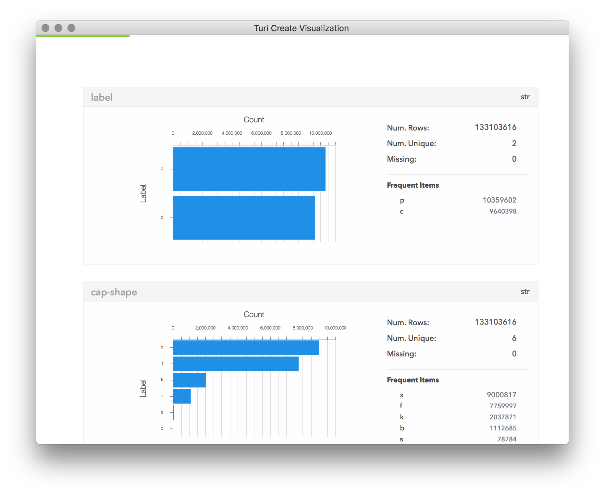
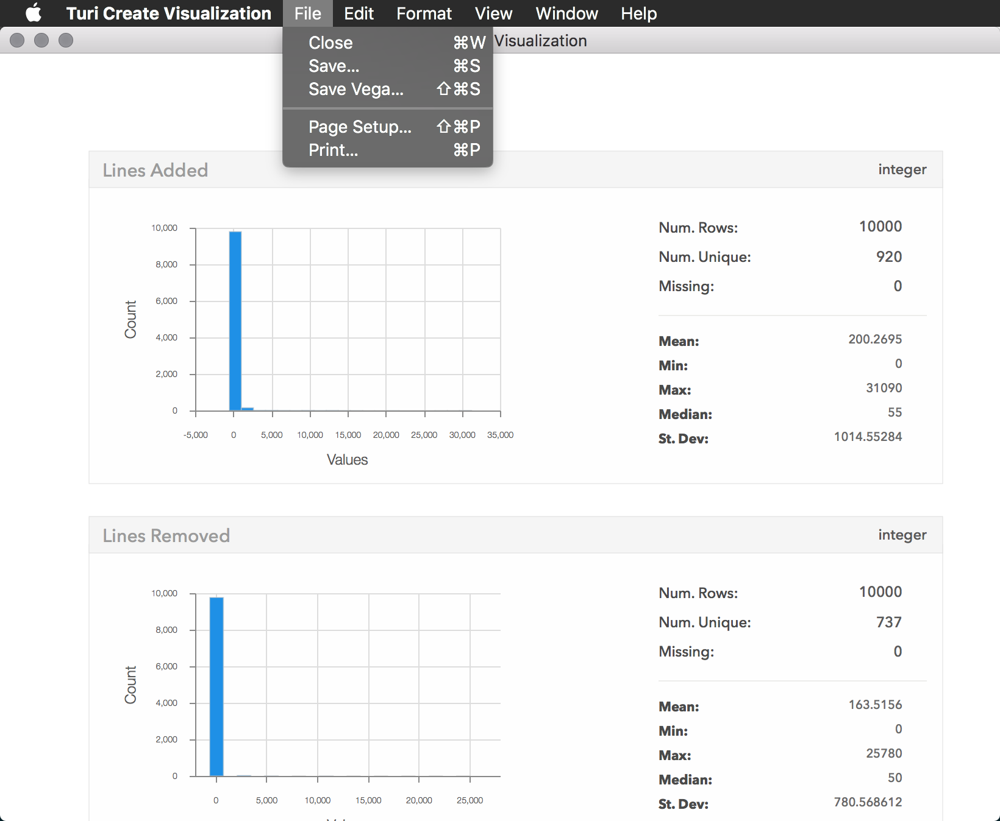

Visualizing Data
Data visualization can help us explore, understand, and gain insight from data. Visualization can complement other methods of data analysis by taking advantage of the human ability to recognize patterns in visual information. Turi Create provides one- and two-dimensional plotting capability, as well as an interactive way to explore the contents of a data structure.
Turi Create data structures can also be used with other visualization libraries like matplotlib. You can use any Turi Create data structure with matplotlib and other libraries by converting to a Python list, Pandas DataFrame, Pandas Series, and/or numpy array, depending on what the library expects. In this section we'll focus on the built in visualization methods in Turi Create, which are purpose-built for the types of data visualization commonly used in machine learning tasks, and support very large datasets through streaming aggregation.
Visualization Methods
There are three primary visualization methods in Turi Create:
showproduces a plot summarizing the data structure; the specific plot rendered is determined automatically by the type of data structure, the underlying type of the data structure (dtype), and the number of rows of data. See SFrame.show and SArray.show.turicreate.show(x=, y=)produces a two-dimensional plot of an SArray on the X axis, and an SArray on the Y axis. The specific plot rendered is determined automatically by the underlyingdtypeof bothxandy. See turicreate.show.exploreopens an interactive view of the data structure. For SFrame and SArray, this takes the form of a scrollable table of rows and columns of data. See SFrame.explore and SArray.explore.
Turi Create also enables you to create independent plots including scatter plots, heatmaps, categorical heatmaps, histograms, columnwise summaries, and item frequency plots.
Show
The show method displays a plot of the requested data structure or pair of
data structures to the user, with an automatically selected plot type. When in
Jupyter Notebook, it outputs to the notebook by default, and otherwise opens a
native window or in a web browser. This behavior can be controlled with
turicreate.visualization.set_target.
Streaming Capability
Visualizations produced by show mostly involve aggregated data. Some examples
of aggregation used in Turi Create visualization include
histogram binning, used in the
histogram and heat map plots, and
count distinct, used in
the summary statistics in SFrame.show. These aggregations can take a long
time to perform on a large dataset.
To enable you to see the plot immediately, Turi Create runs these aggregators in a streaming fashion, operating on small batches of data and updating the plot when each batch is complete. This helps you make decisions about what to do next, by giving you an immediate (but partial) view of the dataset, rather than waiting until the aggregation is complete.
While aggregation is happening, a green progress bar is shown at the top of the plot area (see screenshot below). The progress bar will disappear once aggregation has finished.

One-Dimensional Plots
The show method on SArray produces a summary of the data in the SArray. For
numeric data (int or float), this shows a numeric
histogram of the data.
For categorical data (str), this shows a
bar chart
representing the counts of frequently occurring items, sorted by count. The
show method on SFrame produces a summary of each column of the SFrame, using
the plot types described for SArray.show.
Two-Dimensional Plots
In addition to the show method available on individual data structures, the
turicreate.show method takes two parameters (x and y) to plot two data
structures, one on each dimension. The x and y parameters must both be
SArrays of the same length. The specific plot type shown depends on the
underlying dtype of x and y as follows:
- If both
xandyare numeric, and larger than 5,000 rows, a numeric heat map is shown. - If
xandyare numeric, and smaller than or equal to 5,000 rows, a scatter plot is shown. - If one is numeric and the other is categorical, a box plot is shown.
- If both are categorical, a categorical (discrete) heat map is shown.
Approximation
In order to stream plots on very large datasets, we use some highly accurate approximate aggregators from Sketch:
Num. UniqueinSFrame.showusesnum_unique.MedianinSFrame.showandSArray.showforintandfloatcolumns usesquantile.- Counts shown in the plot for categorical item frequency in
SFrame.showandSArray.showonstrcolumns usefrequent_items. - All numeric values in Box Plots use
quantile.
All other values shown in Turi Create visualizations are calculated exactly.
Plot Customization through the API
Most show methods have optional parameters for specifying some plot
configurations:
title=sets the title of the plot forSArray.showandturicreate.show, or the title of the exploration UI forSFrame.exploreandSArray.explore.xlabel=sets the label of the X axis forSArray.showandturicreate.show.ylabel=sets the label of the Y axis forSArray.showandturicreate.show.
These customizations are especially useful when arranging several visualization windows side-by-side for comparison.
Saving Plots
Visualizations produced with show allow you to save the rendered plot image
(Save... produces a .png file) or
Vega specification
(Save Vega... produces a .json file). An image representation will allow
you to share, publish, or view the rendered plot, while the Vega specification
allows for customization of the rendered plot using a variety of tools that
support Vega specifications, like the
online editor.
You can find these options in the File menu as shown below:

Turi Create also lets you save plots as PNG, SVG, or JSON as part of the
Python Plot API. You can save a Plot object by invoking the save method, as
shown in the example below:
import turicreate as tc
# build the plot
x = tc.SArray([1,2,3,4,5])
y = x * 2
custom_plot = tc.visualization.scatter(x,y)
# save the plot
custom_plot.save("custom.json")
custom_plot.save("custom.png")
custom_plot.save("custom.svg")Explore
The explore method allows for interactive exploration of the dataset,
including raw (non-aggregated) data. This takes the form of a
scrollable table capable of showing all rows and columns from the dataset:

Unlike show, the result of explore cannot be saved to .png or exported as
a Vega specification.
See also
To see examples of all the possible visualizations you can get from Turi Create, see the gallery. For a walk-through of when and why to use visualization in the process of feature engineering, see sample use cases. For specific methods and their API parameters, see: